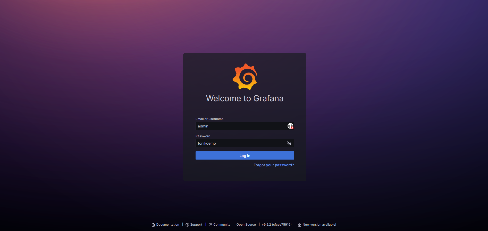
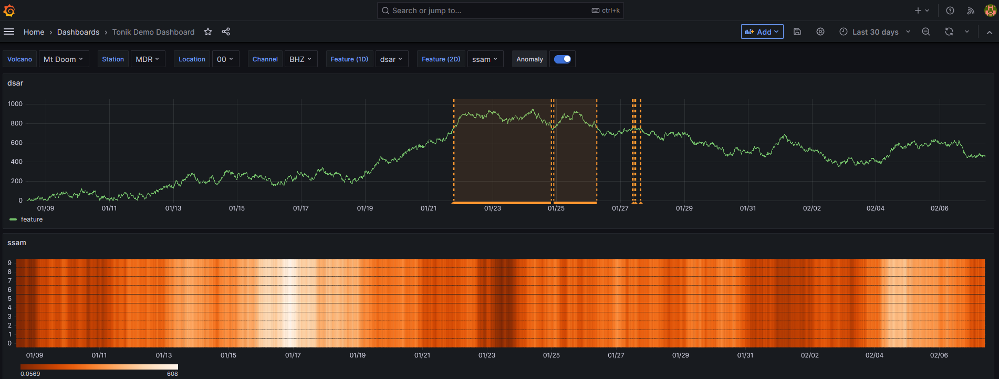

Grafana integration
Tonik's API was written to work well with Grafana for visualising data and data labels.
The repo contains a Grafana example that demonstrates an example setup using docker-compose.
To run the example you first have to install docker and docker-compose. Then get a local copy of the repository by running:
git clone --depth=1 https://github.com/tsc-tools/tonik.git
and finally start the example by running the following commands:
cd tonik/grafana_example
docker-compose up --build
This will build and start the necessary docker containers and then start Grafana on port 11223 of your host machine. Should this port not be available you can change the port in the docker-compose.yml file under the ports section.
Navigating to http://localhost:11223 will show the following login screen:

Entering the shown details will then load the following demo dashboard:

To shut down the grafana instance first stop docker-compose using Ctrl-c and then clean up by running
docker-compose down